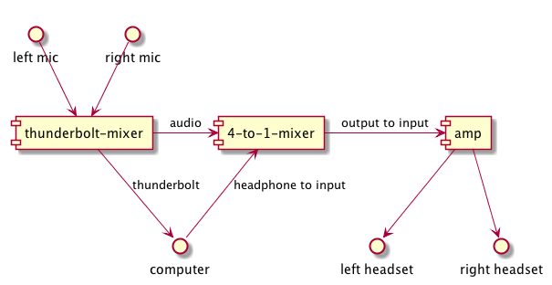

2 video flow
There is a 4 port splitter in cab. Two go to the two monitors. The overhead monitor takes another slot, and the projector takes the final.
This is how our specific setup looks at PDX. Our stream box is the computer running OBS (link).

As part of trying to reduce the Portland scene's bus number in regards to our streaming setup, I've taken to learning our current setup. This setup isn't something I've begun, but as part of learning it I am codifying it all here so others might benefit or even contribute back suggestions. The dream is to have a pretty foolproof setup that anyone mildly technically competent could apply to their scene's cab.
Need access to Matt Wire's github repo that has a Rails server.
Currently this repo isn't public.
Changes to the Challonge setup screws up the integration with the Rails server. The Rails server at that point can't be used (or maybe the data would need to be wiped). At that point, the server is basically useless to us (and we shouldn't try troubleshooting the server during a streaming run if possible). Instead there are text files which override the blue score, blue name, gold score, and gold name. These appear to be sources in OBS. I haven't verified this yet.
There is a 4 port splitter in cab. Two go to the two monitors. The overhead monitor takes another slot, and the projector takes the final.
This is how our specific setup looks at PDX. Our stream box is the computer running OBS (link).
Audio runs a weird loop. The mics wire into a mixer that runs to another mixer. It's necessary for the headphones to get both the output of the computer and the talk-back (link needed) of the mics themselves.

This setup also provides lots of knobs to turn in terms of making sure the announcers can turn up their own voices and also turn up the input of what they are hearing from the game. This is done individually per the mixer and amp knobs available per input/output (mixer and amp, respectively). Turn the computer's audio up to 100% and announcers can turn down as needed.
The known recipe (not fool proof, but most of the work):